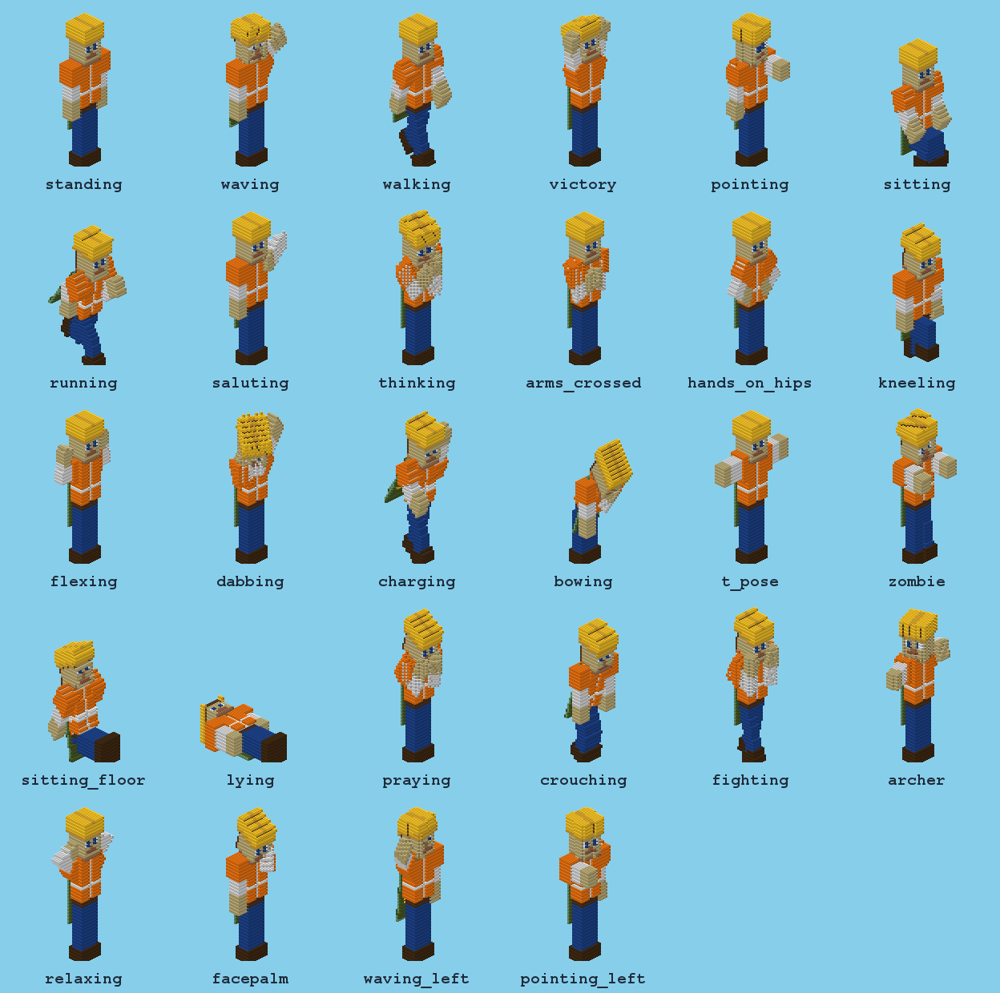

<!doctype html><html><head><meta charset="utf-8"><title>SkinStatues — presentación</title>
<!-- Spec 024: el logo y las franjas de la página de presentación de SkinStatues (SpigotMC, Modrinth, Hangar), con la misma
     técnica que el póster de OmniEvents (presentacion.html, spec 020): un corte del mundo (cielo, pasto, tierra, piedra,
     pizarra, roca madre) en franjas de 1280 px que apiladas se leen como un solo póster. tests-e2e/presentacion.mjs
     (--plugin skinstatues) saca cada pieza (#id) y arma el GIF con ?cuadro=n&cuadros=N. Las fotos son las escenas de
     tests-e2e/skinstatues/presentacion.mjs; si una todavía no existe se dibuja un marcador gris con su nombre.
     Texturas, logo e íconos dibujados aquí (ruido con semilla): nada de Mojang ni de otros plugins. -->
<link rel="stylesheet" href="https://fonts.googleapis.com/css2?family=Press+Start+2P&family=Nunito:wght@600;800;900&display=block">
<style>
:root{--ink:#1d2433;--gold:#ffcc33;--W:1280px}
html,body{margin:0;background:transparent;font-family:Nunito,"Segoe UI",sans-serif;color:#fff}
body{width:1600px}
.pieza{position:relative;overflow:hidden;box-sizing:border-box}
.strip{width:var(--W)}
.edge{position:absolute;left:0;right:0;bottom:0}
.center{text-align:center}
code{font-family:"Cascadia Code",Consolas,monospace}
#logo{width:512px;height:512px}
/* cielo: cabecera */
.sky{background:linear-gradient(#59c2ff,#b9ecff 85%)}
.cloud{position:absolute;background:#fff;height:24px;box-shadow:24px -24px 0 #fff,48px 0 0 #fff,72px -24px 0 #fff,96px 0 0 #fff}
.hdr{position:absolute;display:flex;align-items:center;gap:40px}
.hdr .t{font-family:"Press Start 2P";line-height:1;color:#fff;text-shadow:6px 6px 0 var(--ink)}
.hdr .xyz{font-weight:900;color:var(--ink);margin:18px 0 14px}
.hdr .xyz i{font-style:normal;background:var(--gold);padding:0 8px}
.hdr .sub{font-weight:800;color:#24405e;margin:0;line-height:1.35}
.pill{display:inline-block;font-family:"Press Start 2P";font-size:12px;background:var(--ink);color:var(--gold);padding:8px 12px;margin:14px 8px 0 0;box-shadow:3px 3px 0 #0005}
/* Press Start 2P tiene un solo peso */
.sign,.ex h4,.card h5,.hdr .t,.pill,.slot h6,.slot b,.cap,.chat .p{font-weight:400 !important}
/* letreros */
.sign{display:inline-block;font-family:"Press Start 2P";font-size:28px;color:var(--ink);background:#e8c37a;padding:10px 28px;border:5px solid var(--ink);box-shadow:inset -6px -6px 0 #c99a4a,inset 6px 6px 0 #f6dca0,6px 6px 0 #0006}
.lead{font-size:21px;font-weight:800;margin:14px 0 0;text-shadow:2px 2px 0 #0008}
.lead code{color:var(--gold)}
/* fotos */
.pair{display:grid;gap:40px}
.ex h4{margin:0 0 6px;font-family:"Press Start 2P";font-size:19px;color:var(--gold);text-shadow:3px 3px 0 #0008}
.ex p{margin:4px 0 12px;font-size:17px;font-weight:800;text-shadow:2px 2px 0 #0008;min-height:46px}
.ex p code{color:var(--gold)}
.frame{position:relative;border:6px solid var(--ink);box-shadow:0 0 0 4px #8b6a3e,10px 10px 0 4px #0007;background:#000;line-height:0}
.frame img,.falta{display:block;width:100%;aspect-ratio:16/9;object-fit:cover}
.falta{background:repeating-linear-gradient(45deg,#6b6f78 0 16px,#5f636c 16px 32px);display:flex;align-items:center;justify-content:center;line-height:1.4;font:400 16px "Press Start 2P";color:#e8edf5;text-shadow:2px 2px 0 #0008}
.cap{position:absolute;left:10px;top:10px;font:400 10px "Press Start 2P";background:#1d2433e6;color:var(--gold);padding:5px 8px;line-height:1}
/* barra de chat con los comandos */
.top{height:104px}.top p{min-height:0}
.chat{background:#000a;padding:9px 14px;margin:0 0 12px;font-family:"Cascadia Code",Consolas,monospace;font-size:17px;line-height:1.3;color:#fff;border-left:5px solid var(--gold);white-space:nowrap}
.chat .p{font:400 10px "Press Start 2P";color:var(--gold);margin-right:10px;vertical-align:2px}
/* tarjetas */
.cards{display:grid;grid-template-columns:1fr 1fr;gap:22px}
.card{background:#2b3140ee;border:5px solid var(--ink);box-shadow:inset 0 0 0 3px #4a5268,8px 8px 0 #0008;padding:18px 20px;display:flex;gap:16px;align-items:flex-start}
.card svg{width:64px;height:64px;flex:none}
.card h5{margin:0 0 9px;font-family:"Press Start 2P";font-size:14px;color:#fff;line-height:1.4}
.card p{margin:0;font-size:16px;font-weight:600;color:#d5dbea;line-height:1.38}
.card code{color:var(--gold);font-size:14.5px}
.poses{border:6px solid var(--ink);box-shadow:0 0 0 4px #4a5268,10px 10px 0 4px #0008;background:#87cdea;line-height:0;position:relative}
.poses img{display:block;width:100%}
/* cómo empezar */
.hotbar{display:flex;justify-content:center;margin-top:36px}
.slot{width:270px;height:172px;background:#8b8b8b;border:6px solid var(--ink);box-shadow:inset 6px 6px 0 #5a5a5a,inset -6px -6px 0 #c6c6c6;position:relative;margin-left:-6px;padding:18px 18px;box-sizing:border-box}
.slot.sel{outline:6px solid #fff;z-index:1}
.slot b{font-family:"Press Start 2P";font-size:22px;position:absolute;right:12px;bottom:4px;color:#fff;text-shadow:3px 3px 0 #3f3f3f}
.slot h6{margin:0;font-family:"Press Start 2P";font-size:15px;color:#fff;text-shadow:2px 2px 0 #3f3f3f}
.slot p{margin:8px 0 0;font-size:16px;font-weight:800;color:#1d2433;line-height:1.3}
.slot code{font-size:14.5px}
</style></head><body><div id="todo"></div>
<script>
const Q=new URLSearchParams(location.search);
// GIF de la franja 4: presentacion.mjs pasa ?cuadro=n&cuadros=N (N = cuántos build-*.png hay); sin eso, el último.
const CUADROS=Math.max(1,+(Q.get('cuadros')||1));const CUADRO=Math.min(CUADROS,+(Q.get('cuadro')||CUADROS));
// ——— texturas propias: ruido de píxeles con semilla (siempre el mismo resultado) ———
function azar(s){return()=>((s=(s*16807)%2147483647)/2147483647)}
function tex(cols,s,cell=8,n=16){const r=azar(s);let o=`<svg xmlns='http://www.w3.org/2000/svg' width='${n*cell}' height='${n*cell}' shape-rendering='crispEdges'>`;
 for(let y=0;y<n;y++)for(let x=0;x<n;x++)o+=`<rect x='${x*cell}' y='${y*cell}' width='${cell}' height='${cell}' fill='${cols[Math.floor(r()*cols.length)]}'/>`;
 return `url("data:image/svg+xml,${encodeURIComponent(o+'</svg>')}")`}
const T={grass:tex(['#5ccf4a','#52c241','#66d955','#4fb83e'],11),dirt:tex(['#7b5434','#86603d','#704b2d','#8e6744','#6a4529'],23),
 stone:tex(['#7d7f86','#74767d','#868890','#6c6e75','#8e9098'],37),deep:tex(['#3b3d47','#34363f','#43454f','#2e3038'],41),bed:tex(['#222','#3a3a3a','#555','#161616','#2c2c2c'],53)};
// borde dentado: columnas de la capa de abajo que suben a alturas distintas
function edge(capa,s,ancho=1280,h=48,cell=16){const r=azar(s);let o='';for(let x=0;x<ancho;x+=cell){const k=cell*Math.floor(r()*3+1);o+=`<div data-tex="${capa}" style="position:absolute;left:${x}px;bottom:0;width:${cell}px;height:${k}px"></div>`}
 return `<div class="edge" style="height:${h}px">${o}</div>`}
const P=(x,y,c)=>`<rect x="${x}" y="${y}" width="1.04" height="1.04" fill="${c}"/>`;

// ——— logo: una cabeza de bloques isométrica (casco de obra, como la skin Example del plugin) sobre un pedestal de la
//     piedra oscura del bloque de OmniEvents. Mundo: X hacia la derecha-adelante, Y hacia la izquierda-adelante, Z arriba.
function logoSvg(){
 const caras=[];const sil=[];
 // [cara izquierda (plano Y = y1), cara derecha (plano X = x1), arriba]: matrices SVG por unidad de mundo
 let A,B,H,CX,CY;const pt=(X,Y,Z)=>[CX+(X-Y)*A,CY+(X+Y)*B-Z*H];
 function prisma(x0,y0,x1,y1,z0,z1,izq,der,top){
  const m=(o,u,v)=>`matrix(${u[0]},${u[1]},${v[0]},${v[1]},${o[0]},${o[1]})`;
  const L=pt(x0,y1,z1),F=pt(x1,y1,z1),R=pt(x1,y0,z1),K=pt(x0,y0,z1),Lb=pt(x0,y1,z0),Fb=pt(x1,y1,z0),Rb=pt(x1,y0,z0);
  sil.push([K,R,Rb,Fb,Lb,L].map(p=>p.join(',')).join(' '));
  caras.push(`<polygon points="${sil[sil.length-1]}" fill="#1d2433" stroke="#1d2433" stroke-width="18" stroke-linejoin="round" shape-rendering="geometricPrecision"/>`);
  caras.push(`<g transform="${m(L,[A,B],[0,H])}">${izq}</g>`);           // columnas: de izquierda a la esquina de adelante
  caras.push(`<g transform="${m(F,[A,-B],[0,H])}">${der}</g>`);          // columnas: de adelante a la derecha
  caras.push(`<g transform="${m(K,[A,B],[-A,B])}">${top}</g>`);          // u = +X (hacia la derecha), v = +Y (hacia la izquierda)
 }
 const grid=(w,h,f)=>{let s='';for(let y=0;y<h;y++)for(let x=0;x<w;x++)s+=P(x,y,f(x,y));return s};
 const Y1='#ffcc33',Y2='#f2b519',Y3='#ffe27a',BR='#d99a12',BR2='#b37d0c';
 const SK='#e9b98c',SK2='#d9a477',SKd='#c38c60',SKd2='#b17b52',W='#ffffff',E='#1d2433',M='#7a3f2a',HR='#6b4426';
 // cara de adelante (a la izquierda): casco, ala del casco, ojos, nariz y boca
 const cara=(x,y)=>{if(y<2)return(y===0&&(x===3||x===4))?Y3:Y1;if(y===2)return BR;
  if(y===4&&(x===1||x===6))return W;if(y===4&&(x===2||x===5))return E;if(y===6&&x>=2&&x<=5)return M;
  if(y===5&&(x===3||x===4))return SK2;if(y===3&&(x===0||x===7))return HR;return SK};
 // costado (a la derecha, más oscuro): casco, ala, pelo atrás y la oreja
 const lado=(x,y)=>{if(y<2)return Y2;if(y===2)return BR2;if(y===3||(x>=5&&y<7))return HR;if(x===3&&(y===4||y===5))return SKd2;return SKd};
 // arriba: el casco con su cresta clara al medio
 const arriba=(x,y)=>(x===3||x===4)?Y3:((x*5+y*3)%11===0?Y2:Y1);
 const S='#3a4560',S2='#323b53',R='#2b3247',R2='#262c3f',T0='#4a5672',T1='#424d68';
 const piedra=(c1,c2,s)=>(x,y)=>(x*7+y*13+s)%5===0?c2:c1;
 // ajustar a 512 con margen: ancho 20A, alto 18B+10H (pedestal 10×10×2, cabeza 8×8×8 encima)
 A=20.6;B=A*0.5755;H=A*1.151;CX=256;const alto=18*B+10*H;CY=(512-alto)/2+10*H-2*B;
 prisma(0,0,10,10,0,2,grid(10,2,piedra(S,S2,0)),grid(10,2,piedra(R,R2,3)),grid(10,10,(x,y)=>(x===0||y===0||x===9||y===9)?T0:((x*7+y*13)%5===0?T1:T0)));
 prisma(1,1,9,9,2,10,grid(8,8,cara),grid(8,8,lado),grid(8,8,arriba));
 return `<svg viewBox="0 0 512 512" width="100%" height="100%" shape-rendering="crispEdges">${caras.join('')}</svg>`;
}
const LOGO=logoSvg();

// ——— fotos: las escenas del juego (o un marcador gris si todavía no existen) ———
const IMG='../../img/skinstatues/presentacion/escenas/';
function falta(img){const d=document.createElement('div');d.className='falta';d.dataset.falta=img.dataset.n;d.textContent='escenas/'+img.dataset.n;img.replaceWith(d)}
const foto=(n)=>``;
const marco=(n,cap)=>`<div class="frame">${foto(n)}${cap?`<span class="cap">${cap}</span>`:''}</div>`;
const ex=(t,p,n,cap)=>`<div class="ex"><h4>${t}</h4><p>${p}</p>${marco(n,cap)}</div>`;
// ——— íconos de las tarjetas: 8×8 píxeles sobre piedra ———
function icono(dibujo){let s='';for(let y=0;y<8;y++)for(let x=0;x<8;x++)s+=P(x,y,(x*5+y*3)%4?'#7d7f86':'#6c6e75');
 for(const[x,y,c]of dibujo)s+=P(x,y,c);
 return `<svg viewBox="0 0 8 8" shape-rendering="crispEdges">${s}<rect x=".1" y=".1" width="7.8" height="7.8" fill="none" stroke="#1d2433" stroke-width=".3"/></svg>`}
const px=(filas,pal)=>filas.flatMap((f,y)=>[...f].map((ch,x)=>pal[ch]?[x,y,pal[ch]]:null).filter(Boolean));
const IC={
 hollow:px(['........','.oooooo.','.o....o.','.o....o.','.o....o.','.o....o.','.oooooo.','........'],{o:'#ffcc33'}),
 layers:px(['........','..bbbbb.','..bwwwb.','.aabwwb.','.awabbb.','.awwwa..','.aaaaa..','........'],{a:'#4a7dff',w:'#bcd0ff',b:'#5ef0e6'}),
 poses:px(['....h...','.y.hhh..','..yyy...','...yyy..','...y.y..','..y...y.','..y...y.','........'],{h:'#e9b98c',y:'#3ee86b'}),
 undo:px(['........','..r.....','.rrrrr..','..r...r.','......r.','.....r..','..rrr...','........'],{r:'#ff4040'}),
 lag:px(['........','.wwwwww.','.w....w.','.wggg.w.','.w....w.','.wwwwww.','........','........'],{w:'#e8edf5',g:'#3ee86b'}),
 at:px(['...p....','..ppp...','.pp.pp..','.pp.pp..','..ppp...','...p....','.vvvvvv.','........'],{p:'#b06cff',v:'#e4ccff'})};
const card=(ic,t,p)=>`<div class="card">${icono(IC[ic])}<div><h5>${t}</h5><p>${p}</p></div></div>`;
const nubes=(l)=>l.map(([x,y,w])=>`<div class="cloud" style="left:${x}px;top:${y}px;width:${w}px"></div>`).join('');

document.getElementById('todo').innerHTML=`
<div id="logo" class="pieza">${LOGO}</div>
<section id="franja-1" class="pieza strip sky" style="height:480px">${nubes([[600,40,96],[1060,96,72],[190,34,60]])}
 <div class="hdr" style="left:70px;top:74px"><div style="width:256px;height:256px">${LOGO}</div><div>
 <div class="t" style="font-size:60px">SkinStatues</div>
 <p class="xyz" style="font-size:31px">Any <i>player</i>. Any <i>skin</i>. Any <i>size</i>.</p>
 <p class="sub" style="font-size:20px">Type a name (or paste a skin link) and a height: the player is built<br>out of blocks, in the pose you choose, with the second layer in relief.</p>
 <span class="pill">Paper 1.21.4+</span><span class="pill">28 poses</span><span class="pill">Up to 128 blocks</span><span class="pill">By name or by link</span></div></div>
 ${edge('grass',5)}</section>
<section id="franja-2" class="pieza strip" data-tex="grass" style="padding:44px 60px 70px">
 <div class="center"><span class="sign">100 blocks tall</span><p class="lead"><code>/statue build Technoblade 100 victory</code> on a normal generated world. Any height from 8 to 128 blocks by default.</p></div>
 <div style="margin-top:30px">${marco('giant.png')}</div></section>
<section id="franja-3" class="pieza strip" data-tex="dirt" style="padding-top:40px">
 <div style="position:absolute;left:0;right:0;top:0;height:40px" data-tex="grass">${edge('dirt',7,1280,40)}</div>
 <div style="padding:44px 60px 64px">
 <div class="center"><span class="sign">Any player, any pose</span><p class="lead">Any skin, in any of the 28 built-in poses, or one of your own.</p></div>
 <div style="margin-top:30px">${marco('row.png')}</div></div></section>
<section id="franja-4" class="pieza strip" data-tex="dirt" style="padding:20px 60px 64px">
 <div class="center"><span class="sign">Watch it build</span></div>
 <div class="pair" style="grid-template-columns:1fr 1fr;margin-top:30px">
 ${ex('Block by block','Computed off the main thread, then placed in batches per tick, with a progress bar.',`build-${CUADRO}.png`)}
 ${ex('Up close','The second skin layer in relief: hat, jacket, sleeves and pants stick out.','build-close.png')}</div></section>
<section id="franja-5" class="pieza strip" data-tex="dirt" style="padding:20px 60px 110px">
 <div class="center"><span class="sign">By name or by link</span><p class="lead">A player's name (a PNG in <code>skins/</code> or Mojang), or the https link of any skin PNG.</p></div>
 <div class="pair" style="grid-template-columns:1fr 1fr;margin-top:30px">
 <div class="ex"><div class="top"><div class="chat"><span class="p">NAME</span>/statue build DanTDM 40 waving</div><div class="chat"><span class="p">LINK</span>/statue build https://i.imgur.com/….png 40 pointing_left</div></div>${marco('name-link.png')}</div>
 <div class="ex"><div class="top"><h4>Your blocks</h4><p>Wool, concrete, terracotta… or your own palette in <code>palettes.yml</code>.</p></div>${marco('palettes.png')}</div></div>
 ${edge('stone',13)}</section>
<section id="franja-6" class="pieza strip" data-tex="stone" style="padding:50px 60px 100px">
 <div class="center"><span class="sign">What it does</span></div>
 <div style="display:grid;grid-template-columns:1fr 330px;gap:30px;margin-top:34px;align-items:start">
 <div class="cards">
 ${card('hollow','Hollow','Only the skin surface is built: a big statue costs a fraction of the blocks.')}
 ${card('layers','Both skin layers','Hat, jacket, sleeves and pants in relief on the first layer.')}
 ${card('poses','28 poses + yours','Elbows and knees bend. Write your own in <code>poses.yml</code> with <code>extends</code> and <code>mirror</code>.')}
 ${card('undo','Undo keeps terrain','Every replaced block is saved: <code>undo</code> and <code>remove</code> put grass, water and stairs back.')}
 ${card('lag','No lag','Off the main thread, placed in batches per tick, with a progress bar.')}
 ${card('at','Anywhere','<code>--at x y z</code> and <code>--facing</code>, even from the console. Far chunks load in the background.')}
 </div>
 <div class="poses"><span class="cap" style="left:auto;top:auto;right:10px;bottom:10px">/statue poses</span></div></div>
 ${edge('deep',17)}</section>
<section id="franja-7" class="pieza strip" data-tex="bed" style="padding:76px 60px 56px">
 <div style="position:absolute;left:0;right:0;top:0;height:40px" data-tex="deep">${edge('bed',19,1280,40)}</div>
 <div class="center"><span class="sign">How to start</span></div>
 <div class="hotbar">
  <div class="slot sel"><h6>Install</h6><p>Drop the jar in <code>plugins/</code>. Paper 1.21.4+, Java 21.</p><b>1</b></div>
  <div class="slot"><h6>Try</h6><p><code>/statue build Example 32</code></p><b>2</b></div>
  <div class="slot"><h6>Skins</h6><p><code>network.mojang: true</code>, or links with <code>network.urls: true</code></p><b>3</b></div>
  <div class="slot"><h6>Poses</h6><p><code>/statue poses</code> lists all 28 and yours.</p><b>4</b></div>
 </div></section>`;
document.querySelectorAll('[data-tex]').forEach(e=>{e.style.backgroundImage=T[e.dataset.tex];e.style.backgroundSize='128px'});
</script></body></html>
